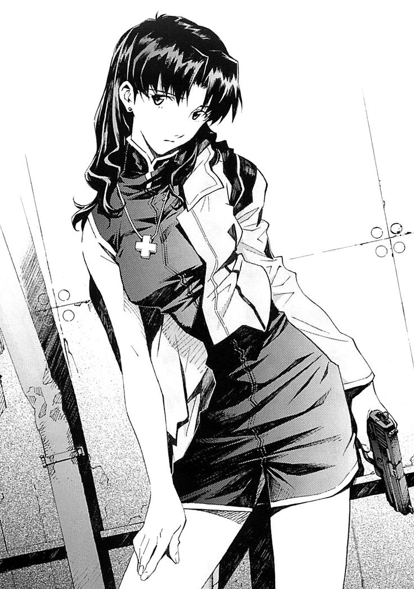

O mangá de Evangelion
O mangá de Evangelion segue quase que fielmente a história do anime no entranto seu final difere quanto ao anime, podemos dizer que o mangá possui um final mais otimista tendo um desfeixo mais favorável ao personagens e ao destino da humanidade. No mangá temos um reboot da história original do anime.
Entre as diferenças temos a perspectiva maior das consequência do Segundo Impacto no planeta ao mesmo tempo que demostra o passado da Misato Katsuragi e Ryoji Kaji mostrado o inicio do relacionamento dos dois e as suas vidas ao viverem em um mundo afetado pelos eventos destrutivos do Segundo Impacto que afetaram profundamente a sociedade.
No total o mangá possui 96 capítulos comprimidos em 14 volumes com o primeiro capítulos sendo publicado em dezembro de 1994 na revista Shōnen Ace com o último capítulo sendo publicado em junho de 2013 na revista Young Ace.
